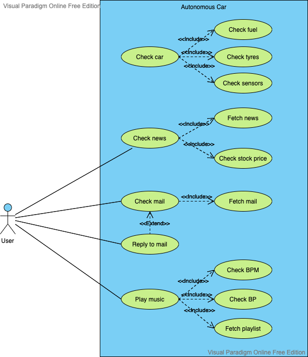
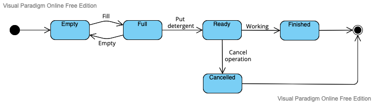
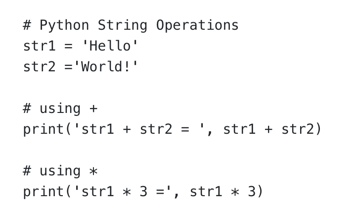
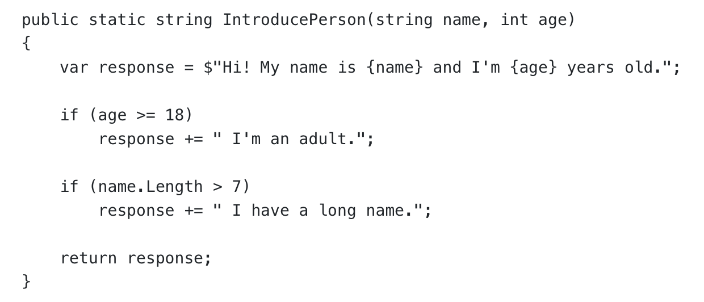
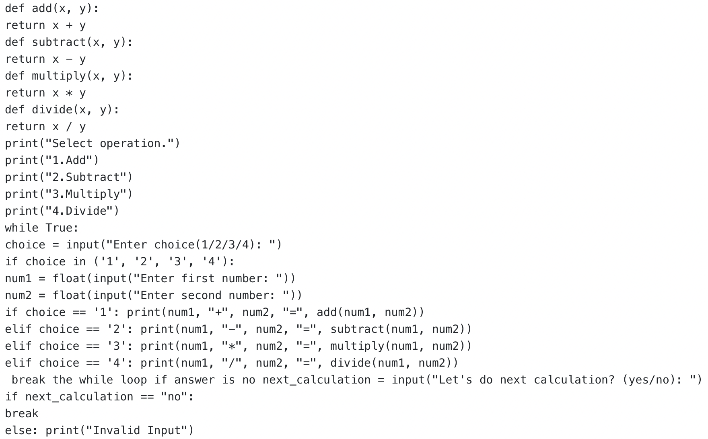

Artefacts
The artefacts I have created during the Module 2 (Object Oriented Programming) of MSc Computer Science program.
A Python program with protected and unprotected variables (Unit 1):
Overview:
Instructions: Develop a Python program and apply protected and unprotected variables within it.
To demonstrate the differences between unprotected, protected and private variables, I created a Person() class with a unprotected (name), protected (surname) and private (salary) attributes and demonstrated how they could (or they couldn't) be accessed from outside the class.
Here is the code.
A pen portrait and a use case diagram for a driverless car (Unit 2):
Overview:
I have created this pen portrait and the use case diagram as part of the seminar preparations. Instructions for the tasks were as follows:
Instructions: Write a pen portrait for a user of a driverless car. Create a use case model which captures the ways in which a user needs to interact with the software system.
Pen portrait of a user of a driverless car:
Tom is the CEO of a big company. He uses an autonomous car to go to his office every morning. He has the habit of making use of the travel time to get prepared for the day ahead. Fortunately, equipped with the latest information technologies, his autonomous car helps him a lot. Once he starts his car, the car software automatically checks the fuel (something he had to do himself before getting this car), the tires and the sensors around the car. When the car starts, using voice commands, Tom asks the software to fetch the latest news headlines and the stock price of his company as well as that of the rivals. Then, he asks the mail app to check his inbox for new messages. If he has new mails in his inbox, he makes the mail app read the message and he replies to his messages. Thanks to the advanced features of the car, when he gets to the office, he is ready to start the day on a high note. After a long and tiring day at the office, he wants to relax on his way back home. All seats of the car are equipped with heart rate and blood pressure sensors. So, the car software checks the heart rate and blood pressure of Tom and selects an appropriate playlist depending on Tom’s mood. When he gets back home, he is full refreshed and ready to spend some quality time with his children!

Figure 1: Use case diagram for a driverless car.
State Machine Diagram for a washing machine (Unit 3):
Overview:
Instructions: Making reference to ‘The Unified Modeling Language Reference Manual Second Edition’, use the State Machine Diagram in Figure 3-7 to design a similar model for a washing machine.

Figure 2: State Machine Diagram for a washing machine.
Protected and unprotected variables (Unit 4):
Overview:
Instructions: Write a Python program to achieve basic employee-related functionality which includes retaining employee details and allowing an employee to book a day of annual leave. Extend the Python program you have now created to use protected and unprotected variables.
In order to deliver the expected functionality, I created an Employee class and added three attributes. I designed Name and Surname as protected variables and Department as unprotected variable. Then, I also defined a leave() method to one day of leave.
Here is the source code.
A Python program with polymorphism (Unit 5):
Overview:
Instructions: Write a Python program with polymorphism that is usable within the summative assessment for the driverless car.
In this piece of code, I displayed polymorphism in terms of method overriding. I created Vehicle() superclass and two child subclasses Car() and Truck(). The child classes inherited the attributes of the superclass, but the print_state() method of the superclass was overridden by the child classes with a method of the same name. Hence, even though it is possible to call the method of the child classes with the same name as that of the superclass, it behaves differently.
You can check out the code from here.
A Python program with abstract methods (Unit 6):
Overview:
Instructions: Develop a Python program which has three abstract methods and one subclass which allows a user to perform banking operations.
In this small program, I have created an abstract class using the abc module and defined three abstract methods (e.g. check balance, deposit, withdraw). Then, I have created a subclass which includes the implementation of the methods. Finally, I instantiated the class and also added a text-menu to allow the user to carry out the basic banking operations.
You can check it out here.
Assignment 1: System Design (Unit 7):
Overview:
Instructions: As a Software Engineer, you are given the role of designing the software which supports the operation of a self-driving car. In your research around the capabilities of self-driving cars, you can search for keywords that include autonomous vehicle, driverless car, robotic car. You are required to identify three operations that you wish to support in your software and provision capability for them through the use of an object-oriented Python program. The system should support the ability for a customer to interact with the system through a front-end. Running in the system back-end should be a capability that simulates the generation and collection of data attributes that represent the wider environment within which the driverless car is operating.
In order to implement a nested dictionary within a Car class, I have created a Car class which includes an empty dictionary. When I instantiated the class, I updated the dictionary with update() method to populate it with a nested dictionary (a Cars and a Trucks dictionary within one enclosing dictionary). I also designed three getter functions for keys(), values() and items() functions, in order to avoid accessing the dictionary directly. Finally, I have used these getter functions to print out information stored in the dictionary to screen.
As instructed in the assignment description, I started by choosing three operations to be supported by the software: traffic sign recognition, V2V communication and obstacle detection. I designed the system in such a way that all component communicate with the control unit of the car and the control unit evaluates the situation and takes the necessary action (e.g. accelerate, brake, etc.).
Using UML, I designed a use case diagram, an activity diagram, sequence diagrams,state transition diagram and finally, a class diagram to come up with a design for a software to support a driverless car.
You can see the design document from here.
Implementation of a nested dictionary within a class (Unit 7):
Overview:
Instructions: Create a nested dictionary of data on cars within a Car class. Extend the program to work with the dictionary by calling the following methods: items(), keys() and values()
In order to implement a nested dictionary within a Car class, I have created a Car class which includes an empty dictionary. When I instantiated the class, I updated the dictionary with update() method to populate it with a nested dictionary (a Cars and a Trucks dictionary within one enclosing dictionary). I also designed three getter functions for keys(), values() and items() functions, in order to avoid accessing the dictionary directly. Finally, I have used these getter functions to print out information stored in the dictionary to screen.
Here is the code.
Exception handling by the implementation of try/except block (Unit 8):
Overview:
Instructions: Incorporate the try/except block into a Python program to handle exceptions.
As part of the seminar preparations, I have designed a Body Mass Index (BMI) calculator to demonstrate exception handling with try/except block. I handled the exceptions ValueError, ZeroDivisionError and TypeError.
See the source code from here.
Implementation of the linear search algorithm (Unit 8):
Overview:
Instructions: Write a Python program to carry out a linear search on a list data structure.
Also as a seminar preparation, I wrote a simple program to carry out a linear search on a list which contains the state names of the USA. The search function returns the result of the search as well as (if found) the position of the state name in the list.
You can check it out from here.
e-Portfolio Activity 2 (Unit 9):
Overview:
Instructions: Extend the following program to test accuracy of operations using the assert statement.

In this little piece of code, I included two assert statements: The first assert statement checks the type of str1 to make sure that it is of type “str” and the second one checks the value of str2 to make sure that it is ‘World!’. Since both of them are True, program runs without raising AssertionError.
See the code from here.
e-Portfolio Activity 1 (Unit 9):
Overview:
Question: What is the cyclomatic complexity of the following piece of code?

The Cyclomatic Complexity (CC) is could be defined as a metric that shows the possible number of paths that might be followed in a piece of code. So, in order to determine the CC, we need to calculate the number of possible branches.
1. If no if clauses are triggered, only “response” variable is printed to the screen.
2. If the age is greater than or equal to 18, first if clause is triggered.
3. If the name is longer than 7 characters, second if clause is triggered.
In this case, CC for this piece of code is calculated as 3.
Use of documentation to support code development (Unit 10):
Overview:
Instructions:Add appropriate commenting and documentation for the code below.

I added the necessary comments and indentation to make the program more readable.
Here is the source code.
Assignment 2: System Implementation (Unit 11):
Overview:
Instructions: You are now required to implement the code designed to support the operation of a driverless car as described in Unit 7. This should be representative of the use case diagram, activity diagram, class diagram, sequence diagram, and state transition diagram defined in your design document.
I developed the driverless car following the design document I prepared in Unit 7. Throughout the program, I have employed OOP methodology. Most notably, I started by designing abstract base classes, then designed classes and finally the objects. Since the system consists of many components which interacts with each other, I passed the information by encapsulating into objects (for instance, when an obstacle is detected, an obstacle object is created in the runtime and it is passed to control unit of the car for processing).
Apart from the classes, attributes and methods laid out in the design document, I made four changes: (1) I added a timestamp for the car log. (2) I deleted the list_signs() method from TMA_DB because given the current structure, it is not needed (e.g. there is no direct benefit for user to list the signs in the database). (3) Added change direction and (4) change lanes methods.
Here is the source code.